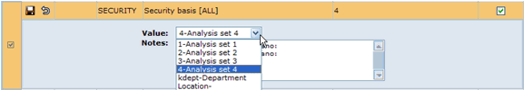
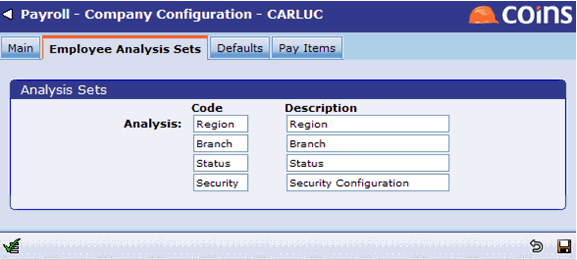
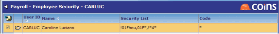

<?xml version="1.0" encoding="utf-8"?>
<html lang="en" xmlns:MadCap="http://www.madcapsoftware.com/Schemas/MadCap.xsd">
    <head><title>Setting Up Employee Security</title>
    </head>
    <body>
        <MadCap:concept term="Topics" />
        <h1 class="print">Setting Up Employee Security</h1>
        <table class="SpecificTopic">
            <tbody>
                <tr>
                    <td class="Edge">&#160;</td>
                    <td><span class="Stars">***</span>NOTE: THIS IS A US SPECIFIC TOPIC.<span class="Stars">***</span></td>
                    <td class="Edge">&#160;</td>
                </tr>
            </tbody>
        </table>
        <p>Although <strong>security</strong> can be set to individual departments and locations, you may wish to invoke a more complex security model. The procedure below serves as an <strong>example</strong> of how you can control which employee records each <span class="null"><span class="null"><span class="module">Payroll </span></span></span>user can access. This means that, although it may not necessarily be the exact procedure you would follow for another employee, it does give you the basic process involved.</p>
        <div class="process">
            <h2 class="print">To set up employee security:</h2>
            <ol>
                <li>In <span class="function" title="Function:%WPR000BSYP">Parameters</span>, designate parameter <span class="parameter">SECURITY </span>as an analysis set to be used specifically for Security. In our example, we are using <span class="userinput">Analysis Set 4</span>.<br /></li>
                <li>Go to <span class="function" title="Function:%WPR211SQRP"><MadCap:variable name="Variables.kco company" style="text-transform: capitalize;" /> Configuration</span> and click the <strong>Employee Analysis Sets</strong> tab. Set the 4<sup>th</sup> analysis set (as defined in <span class="function" title="Function:%WPR000BSYP">Parameters</span>) to <span class="userinput">SECURITY CONFIGURATION</span>.<br /><p class="noteheader">NOTE</p><p class="note">A single Analysis Set is used for all pay frequencies when processing US <span class="module">Payroll</span>.</p><br /></li>
                <li>Go to <span class="function" title="Function:%WPR9BCOA">Analysis Sets</span>. Select the <span class="field">Type </span>named <span class="userinput">Security Configuration</span>. Click .</li>
                <blockquote dir="ltr" style="MARGIN-RIGHT: 0px;">
                    <p style="MARGIN-RIGHT: 0px;">Use the <span class="field">Code </span>field to add codes representing Security Levels and Groups. The <span class="field">Code </span>field is an 8 character field. For the first character, enter the Security Level to be used in <MadCap:variable name="General.ProductName" /> US (Levels 1-7). For the remaining 7 characters, enter the Security Type to be used in <MadCap:variable name="General.ProductName" /> US.</p>
                    <p class="noteheader">NOTE</p>
                    <p class="note">The analysis codes listed below are only one example demonstrating how they may be structured. You may wish to set up your analysis code structure differently.</p>
                </blockquote>
                <ol>
                </ol>
                <blockquote dir="ltr" style="MARGIN-RIGHT: 0px;">
                    <p style="MARGIN-RIGHT: 0px;"><em><strong>Examples:</strong></em>
                    </p>
                </blockquote>
                <ol>
                    <ol>
                        <ul dir="ltr" style="MARGIN-RIGHT: 0px;">
                            <li>Analysis code <span class="screentype">1FHou</span>, where "1" would represent Security Level; "F" would mean FIELD; and "Hou" would represent Houston Based Employees.</li>
                            <li>Analysis code <span class="screentype">1FFLO</span>, which would represent Level 1 Field based employees in Florida.</li>
                            <li>Analysis code <span class="screentype">4EHou</span>, which would represent Level 4 Executives in Houston.<br /></li>
                        </ul>
                    </ol>
                </ol>
                <li>Go to <span class="function" title="Function:%WPRBCOS">Employee Security</span> to invoke security for a user, such as a Payroll Clerk. You may set the Employee Security as shown below. If there are many field locations (such as <strong>hou</strong>, <strong>FLO</strong>, etc.), you may request to be shown all Level 1 Field employees, except for those in Houston, and exclude all Level 4 employees.</li>
                <ol>
                </ol>
                <blockquote dir="ltr" style="MARGIN-RIGHT: 0px;">
                    <p><b>Notes on adding a Security List</b>
                    </p>
                    <ul>
                        <li>The Employee Security List is <MadCap:variable name="Variables.kco company" style="text-transform: capitalize;" /> specific. You must repeat this process for each <MadCap:variable name="Variables.kco company" /> where US <span class="module">Payroll </span>is processed.</li>
                        <li>An additional character is used as a prefix when adding a security list to <span class="function" title="Function:%WPRBCOS">Employee Security</span>. The prefix is the Pay Interval of the employees of the <MadCap:variable name="Variables.kco company" />. The prefix is defined as follows:</li>
                    </ul>
                    <blockquote dir="ltr" style="MARGIN-RIGHT: 0px;">
                        <p style="MARGIN-RIGHT: 0px;">0 = WEEKLY</p>
                        <p style="MARGIN-RIGHT: 0px;">1 = MONTHLY</p>
                        <p style="MARGIN-RIGHT: 0px;">2 = 2 WEEKLY</p>
                        <p style="MARGIN-RIGHT: 0px;">3 = 4 WEEKLY </p>
                    </blockquote>
                </blockquote>
                <ol>
                    <ul>
                        <li>When defining security, you may use a can-do list to represent a character group's pattern.</li>
                        <li>When defining security, you may use exceptions (!) to exclude patterns.</li>
                        <li>Exclusions to a pattern must precede the most inclusive pattern (see example) and multiple entries in a pattern are separated with a comma.</li>
                    </ul>
                </ol>
                <blockquote dir="ltr" style="MARGIN-RIGHT: 0px;">
                    <p style="MARGIN-RIGHT: 0px;">Below is the pattern '!01FHOU,01F*,!*4*' for user <strong>carluc</strong>. It is interpreted as follows:</p>
                    <ul>
                        <li><span class="userinput">!01fHOU </span>means Exclude (<strong>!</strong>) all Weekly (<strong>0</strong>) Level 1 (<strong>1</strong>) Field (<strong>f</strong>) from Houston area (<strong>HOU</strong>).</li>
                        <li><span class="userinput">01F*</span> means Include (no ! in pattern) all Weekly (<strong>0</strong>) Level 1 (<strong>1</strong>) Field (<strong>F</strong>) for all areas not previously excluded.<span class="userinput"></span></li>
                        <li><span class="userinput">!*4*</span> means Exclude (<strong>!</strong>) for all Payroll Intervals (<strong>*</strong>) for Level 4 (<strong>4</strong>) for all Execs/Field/Office (<strong>*</strong>) for all areas (included in previous <strong>*</strong>).</li>
                    </ul>
                    <p>You may want to avoid mixing alpha and numeric values when defining a section within a pattern. In this example, the area (represented as <span class="screentype">HOU</span>, <span class="screentype">FLO</span>, <span class="screentype">SAN</span>, <span class="screentype">ADM</span>) uses alpha values only, thereby eliminating the possibility that the pattern '!*4*' will match anything other than Level 4 employees.<br /></p>
                </blockquote>
            </ol>
        </div>
        <div class="configuration">
            <h2 class="print">Setting Up Employee Security</h2>
            <p>
                <MadCap:relatedTopics target="_popup" style="mc-label: Parameters;mc-help-control-display: list;">
                    <MadCap:relatedTopic src="../Parameters/PR/pr_security.htm" />
                </MadCap:relatedTopics>
            </p>
        </div>
    </body>
</html>